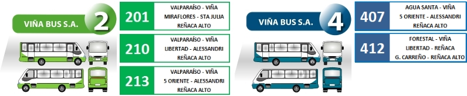
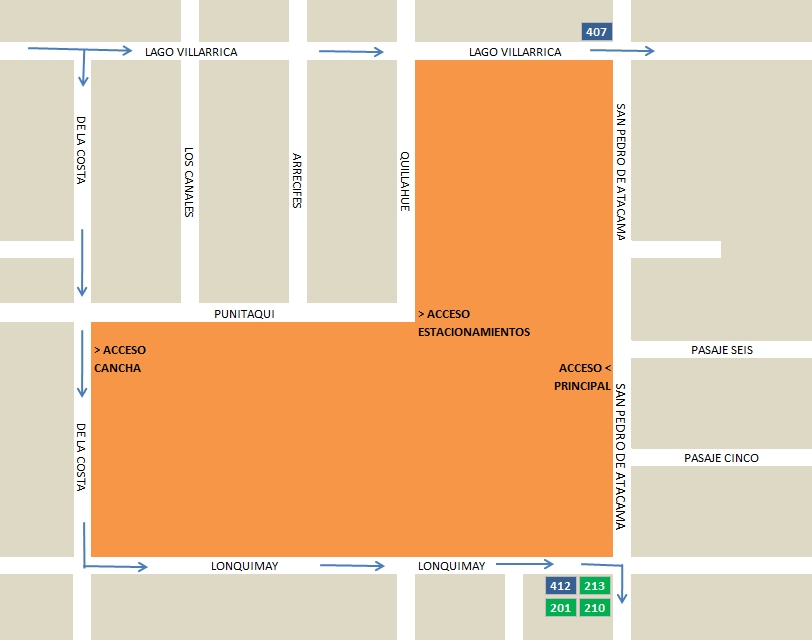

Historia
El Colegio MARÍA REINA abrió sus puertas el 3 de marzo de 1981 en Reñaca Alto, Viña del Mar, en un terreno de 6,000 m2 destinado por SERVIU para fines educativos. Fundado en un barrio con necesidades sociales, el objetivo era brindar educación de calidad a niños de bajos recursos. Inicialmente, carecía de servicios básicos en la zona, pero perseveró en su misión educativa.
En mayo de 1981, ante la necesidad, se amplió para incluir Educación Media Técnico Profesional. En 1982, con la generosidad de D. Dionisio Hernández, se adquirió un terreno de 27,000 m2 para el Colegio Hispano Americano. Inicialmente, ofreció especialidades como Auxiliar de Párvulos, Contabilidad y Electromecánica, adaptándose con el tiempo a cambios en la demanda laboral y educativa.
En 2003, se firmó un convenio en Madrid con el Ministerio de Educación de España, otorgando al Colegio Hispano Americano doble titularidad chilena y española. Los alumnos tienen la opción de obtener títulos españoles al completar ciertos niveles. Actualmente, el colegio ofrece niveles de 7° a 4° Medio, con especialidades en Administración, Contabilidad, Electricidad y Electrónica, así como la modalidad Científico Humanista.
Presentacion
El Colegio Hispano Americano, ubicado en Reñaca Alto, Viña del Mar, es parte de la Fundación Colegio Hispano Americano. Ofrece educación en modalidades Técnico Profesional y Científico Humanista, basadas en valores católicos, con un enfoque en la calidad educativa y el respeto. Cumple con la legislación vigente sobre derechos y libertad de enseñanza. Gracias a un convenio con el Ministerio de Educación de España, el colegio es de titularidad española, mientras que sus alumnos mantienen la titularidad chilena y son considerados alumnos del Reino de España
Identidad
El COLEGIO HISPANO AMERICANO, con dirección en Calle San Pedro de Atacama, 675, sector de Reñaca Alto, Comuna y Ciudad de Viña del Mar, Chile. Es un centro educativo particular, subvencionado, con reconocimiento del Ministerio de Educación de Chile por la Resolución de la Secretara Regional Ministerial Nº 1315 del 05 de mayo de 2.003; católico, reconocido como tal por el Obispado de Valparaíso mediante decreto número 24 del año 1992, con doble titularidad chilena y española,. El 17 de febrero del año 2003, mediante el convenio firmado con el Ministerio de Educación y Ciencia del Reino de España, nuestro centro pasa a ser COLEGIO ESPAÑOL, Código N 60001443 e integrante de la Red Iberoamericana de Colegios Españoles. El Colegio Hispano Americano se rige por la legislación educacional y planes curriculares, de acuerdo a las orientaciones del Ministerio de Educación de Chile y en conformidad con el convenio firmado con el Ministerio de Educación, Cultura y Deporte de España, los alumnos de este centro tienen incluida en sus planes y programas, la asignatura de Historia y Geografía de España.
Dirección
En sus 37 años de historia, el Colegio Hispano Americano ha experimentado un viaje lleno de alegrías y desafíos, desde modestas instalaciones hasta la creación de modernas aulas, talleres y espacios de calidad. Se destaca el progreso en infraestructura, pasando de salas de madera y patios de tierra a instalaciones bien cuidadas y equipadas con tecnología de vanguardia. Este desarrollo ha sido fruto de sacrificio y confianza en Dios, siempre presente a pesar de las limitaciones.
El relato resalta el compromiso con la formación integral y cristiana de los estudiantes, alentándolos a confiar en Dios y amar a la Madre. Se destaca la evolución de los recursos educativos, desde simples talleres hasta completos laboratorios de computación y equipos modernos para áreas como Electricidad y Electrónica.
La narrativa también subraya la importancia de la misión funcional del colegio: "Formar eficientes profesionales y ciudadanos profundamente cristianos". Se enfatiza el continuo mejoramiento cualitativo de la educación y formación profesional. Además, se comparte la relevancia de la conexión con el Ministerio de Educación y Ciencia de España, proporcionando a los estudiantes oportunidades educativas europeas.
Como llegar
Para llegar a nuestro colegio, usted cuenta con transporte público, el cual realiza su recorrido por las avenidas aledañas. Los recorridos y número de línea son los siguientes:
El acceso principal de nuestro establecimiento se encuentra en Calle San Pedro de Atacama Nº675, Reñaca Alto.
